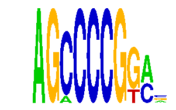

family_4 |
|---|
|  |
| Download PWM |
| Download instances (motifs) |
| Show motif distribution |
Query_ID | Query_Consensus | Subject_Name | Source_DB | Subject_ID | Length | Orientation | Offset | Divergence | Overlap | Subject_Consensus |
|---|---|---|---|---|---|---|---|---|---|---|
| family_4 | AGCCCCGGAN | CCGNMNNTNACG | JASPAR | PF0106 | 12 | as given | 4 | 0.404 | 6 | CCGGAAGTGACG |
Sequence | Start_position (from start) | Start_position (from end) | Average conservation | Best conservation score | Instance_with_best_CS | Best_Z-score | Instance_with_best_ZS | Strand |
|---|---|---|---|---|---|---|---|---|
| chr14:102285069-102286069 | 558 | 568 | 0.0005 | 0.001 | AGMCCCGGAS | 17.349785 | AGMCCCGGAS | 1 |
| chr13:5896671-5897671 | 340 | 350 | 0.5649 | 1 | AGCCCCGKM. | 20.804178 | AGCCCCGGAS | 1 |
| chr16:42875879-42876879 | 511 | 521 | 0.9385 | 0.979 | AGCCCCGKM. | 16.881926 | AGCCCCGKM. | -1 |
| chr16:97580731-97581731 | 783 | 793 | 0.0004 | 0.001 | AGCCCCGKM. | 16.881926 | AGCCCCGKM. | 1 |
| chr2:19580015-19581015 | 315 | 325 | 0.0008 | 0.002 | AGMCCCGGAS | 17.349785 | AGMCCCGGAS | -1 |
| chr12:83222976-83223976 | 658 | 668 | 0.0001 | 0.001 | AGCCCCGKM. | 16.881926 | AGCCCCGKM. | 1 |
| chr19:44815795-44816795 | 56 | 66 | 0.9965 | 1 | AGCCCCGKM. | 18.047867 | AGCCCCGGA. | 1 |
| chr2:172912809-172913809 | 89 | 99 | 0.01 | 0.023 | AGCCCCGKM. | 16.881926 | AGCCCCGKM. | -1 |
| chr3:137732844-137733844 | 322 | 332 | 0.9885 | 1 | AGCCCCGKM. | 16.881926 | AGCCCCGKM. | 1 |
| chr4:12581953-12582953 | 739 | 749 | 0.9968 | 1 | AGCCCCGKM. | 18.047867 | AGCCCCGGA. | 1 |
| chr2:74924739-74925739 | 424 | 434 | 0.4096 | 0.722 | AGCCCCGKM. | 16.881926 | AGCCCCGKM. | 1 |
| chr1:94075747-94076747 | 543 | 553 | 0.0003 | 0.001 | AGCCCCGKM. | 18.047867 | AGCCCCGGA. | -1 |
| chr1:166391413-166392413 | 665 | 675 | 0.9282 | 0.994 | AGCCCCGKM. | 18.047867 | AGCCCCGGA. | 1 |
| chr9:67517574-67518574 | 703 | 713 | NA | NA | AGCCCCGKM. | 16.881926 | AGCCCCGKM. | -1 |
| chr11:23976191-23977191 | 840 | 850 | 0.0536 | 0.086 | AGCCCCGKM. | 16.881926 | AGCCCCGKM. | 1 |
| chr19:48021098-48022098 | 668 | 678 | 0.0011 | 0.006 | AGCCCCGKM. | 16.881926 | AGCCCCGKM. | 1 |
| chr6:127717326-127718326 | 214 | 224 | 0.9968 | 1 | AGCCCCGKM. | 18.047867 | AGCCCCGGA. | 1 |
| chr2:165905939-165906939 | 338 | 348 | 0.0009 | 0.004 | AGCCCCGKM. | 16.881926 | AGCCCCGKM. | -1 |
| chr17:69530370-69531370 | 398 | 408 | 0.0369 | 0.331 | AGCCCCGKM. | 16.881926 | AGCCCCGKM. | 1 |
| chr5:66714386-66715386 | 797 | 807 | 0.0472 | 0.204 | AGCCCCGKM. | 16.881926 | AGCCCCGKM. | 1 |
| chr12:54133932-54134932 | 519 | 529 | 0.9993 | 1 | AGCCCCGKM. | 18.047867 | AGCCCCGGA. | -1 |
| chr4:9758037-9759037 | 448 | 458 | 0.3123 | 0.988 | AGCCCCGKM. | 16.881926 | AGCCCCGKM. | 1 |
| chr9:64956772-64957772 | 694 | 704 | 0.7604 | 0.93 | AGCCCCGKM. | 18.047867 | AGCCCCGGA. | 1 |
| chr11:88709913-88710913 | 265 | 275 | 0.0018 | 0.004 | AGCCCCGKM. | 18.047867 | AGCCCCGGA. | 1 |
| chr6:24480023-24481023 | 703 | 713 | 0.025 | 0.071 | AGCCCCGKM. | 16.881926 | AGCCCCGKM. | -1 |
| chr4:124323290-124324290 | 868 | 878 | 0.1449 | 0.189 | AGCCCCGKM. | 18.047867 | AGCCCCGGA. | -1 |
| chr10:84217087-84218087 | 855 | 865 | 0.981 | 0.998 | AGCCCCGKM. | 16.881926 | AGCCCCGKM. | -1 |
| chr12:87701980-87702980 | 481 | 491 | 0.0086 | 0.036 | AGCCCCGKM. | 16.881926 | AGCCCCGKM. | 1 |
| chr11:109483572-109484572 | 452 | 462 | 0.1123 | 0.634 | AGCCCCGKM. | 16.881926 | AGCCCCGKM. | 1 |
| chr2:166887578-166888578 | 945 | 955 | 0.0394 | 0.093 | AGCCCCGGA. | 20.804178 | AGCCCCGGAS | 1 |
| chr4:57312601-57313601 | 455 | 465 | 0.0158 | 0.042 | AGCCCCGKM. | 18.047867 | AGCCCCGGA. | 1 |
| chr19:22628756-22629756 | 174 | 184 | 0.1416 | 0.43 | AGCCCCGGA. | 16.881926 | AGCCCCGKM. | -1 |
| chr2:113204373-113205373 | 213 | 223 | 0.8894 | 0.992 | AGCCCCGKM. | 17.349785 | AGMCCCGGAS | 1 |
| chr8:11699870-11700870 | 635 | 645 | 0.5086 | 0.521 | AGMCCCGGAS | 17.349785 | AGMCCCGGAS | 1 |
| chr2:162484244-162485244 | 216 | 226 | 0.0097 | 0.033 | AGCCCCGKM. | 18.047867 | AGCCCCGGA. | 1 |
| chr7:86056967-86057967 | 968 | 978 | 0.0525 | 0.054 | AGCCCCGKM. | 16.881926 | AGCCCCGKM. | -1 |
| chr5:51803194-51804194 | 497 | 507 | 0.9966 | 1 | AGCCCCGGA. | 16.881926 | AGCCCCGKM. | 1 |
| chr2:172374664-172375664 | 987 | 997 | 0.0785 | 0.296 | AGMCCCGGAS | 17.349785 | AGMCCCGGAS | -1 |
| chr16:43505965-43506965 | 533 | 543 | 0.9869 | 0.998 | AGCCCCGKM. | 16.881926 | AGCCCCGKM. | 1 |
| chr2:166887578-166888578 | 550 | 560 | 0.5148 | 0.998 | AGCCCCGKM. | 16.881926 | AGCCCCGKM. | 1 |
| chr16:33891642-33892642 | 346 | 356 | 0.0027 | 0.007 | AGCCCCGKM. | 16.881926 | AGCCCCGKM. | -1 |
| chr17:32279977-32280977 | 659 | 669 | 0.82 | 1 | AGCCCCGGA. | 16.881926 | AGCCCCGKM. | 1 |
| chr8:35013153-35014153 | 576 | 586 | 0 | 0 | AGCCCCGKM. | 18.047867 | AGCCCCGGA. | -1 |
| chr8:110764927-110765927 | 394 | 404 | 0.9952 | 1 | AGCCCCGKM. | 18.047867 | AGCCCCGGA. | 1 |
| chr18:67529297-67530297 | 399 | 409 | 0.0011 | 0.005 | AGCCCCGKM. | 16.881926 | AGCCCCGKM. | -1 |